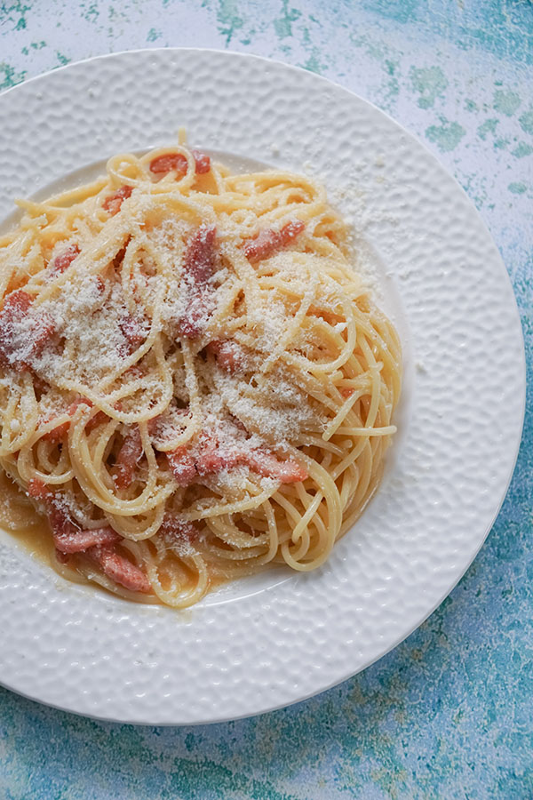

Spaghetti Alla Carbonara Tradizionali

Amazing Spaghetti Alla Carbonara Tradizionali from Andry008 of Allrecipes.com
Unlike a lot of recipes out there for spaghetti carbonara, this is the true Italian recipe from an Italian! You can't get more authentic than this recipe! Top with extra Pecorino-Romano cheese, salt, and pepper. Note there's no cream, just eggs, and Pecorino Romano cheese is used, not Parmesan.
Ingredients
- 1 (14 oz) package spaghetti
- 5 oz guanciale (cured pork cheek), cut into small cubes
- 3 egg yolks
- 1 egg
- ¾ cup grated Pecorino-Romano cheese
- salt and pepper to taste
Steps
- Bring a large pot of lightly salted water to a boil. Cook spaghetti in the boiling water, stirring occasionally until tender yet firm to the bite, about 12 minutes. Drain.
- Heat a skillet over medium heat; cook and stir guanciale until crisp, 5 to 10 minutes.
- Whisk egg yolks and egg together in a bowl; add Pecorino-Romano cheese, salt, and pepper and whisk well. Stir in guanciale. Add spaghetti and toss until evenly coated.